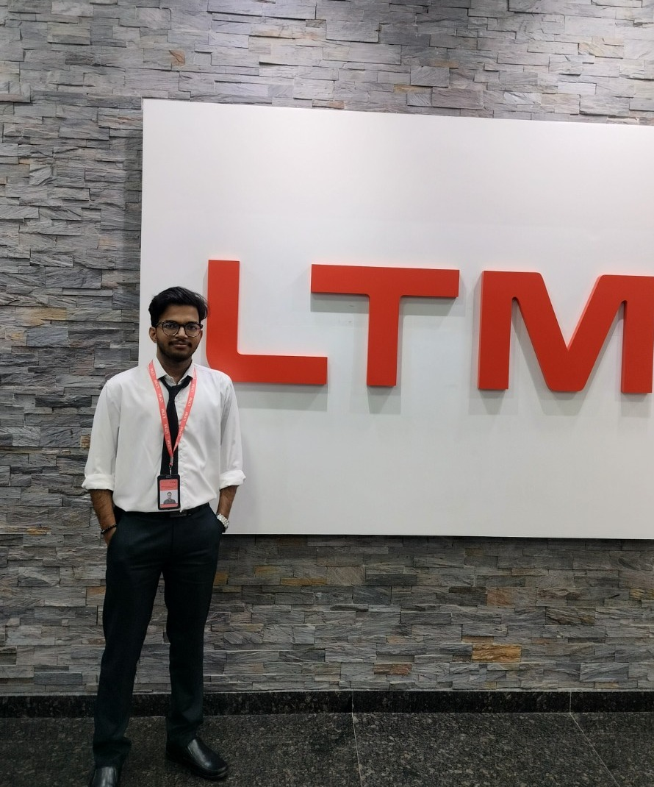

BCA
Aditya Degree College · Visakhapatnam
8.50 CGPA2023 — 2026
Hello, I'm
Engineer · Cloud & Infra
Python & Data Analytics Enthusiast · Exploring AI & Emerging Technologies
I enjoy turning data into useful insights and building practical technology projects with Python, analytics and modern web tools.

About me
I'm an Engineer · Cloud & Infra at LTIMindtree, based in Hyderabad, currently working with the Calpine Corporation project. My role gives me exposure to enterprise IT, cloud and infrastructure technologies while I continue developing my skills in Python, data analytics and AI.
I like learning by building. My project work has given me practical exposure to data preprocessing, exploratory analysis, visualization, machine learning workflows and web application development.
Outside technology, I enjoy chess and cooking — both keep me curious, patient and creative.
Aditya Degree College · Visakhapatnam
Sri Chaitanya Junior College · Visakhapatnam
Chalapathi High School · Visakhapatnam
Skills
Experience
Working in the Calpine Corporation project, with exposure to enterprise cloud and infrastructure technologies and practices. Building hands-on experience across Linux, networking, cloud and related IT technologies.
Worked with Python-based data analytics workflows including preprocessing, exploratory analysis, visualization and practical analytics projects.
Worked on web development using HTML5, CSS3 and JavaScript, with hands-on exposure to MERN technologies including MongoDB, Express.js, React and Node.js.
Selected projects
An interactive traffic analytics dashboard built around 2,160 records across 3 junctions. The project covers data cleaning, feature engineering, EDA, statistical analysis, visual storytelling, anomaly analysis and congestion prediction.
A machine-learning web application that processes health parameters and returns a model-based risk prediction through a React frontend and Flask backend.
Certifications
Cisco Certification
Infosys Springboard
Cisco
NCS / Microsoft
I'm open to professional conversations, collaboration and opportunities to learn and build.